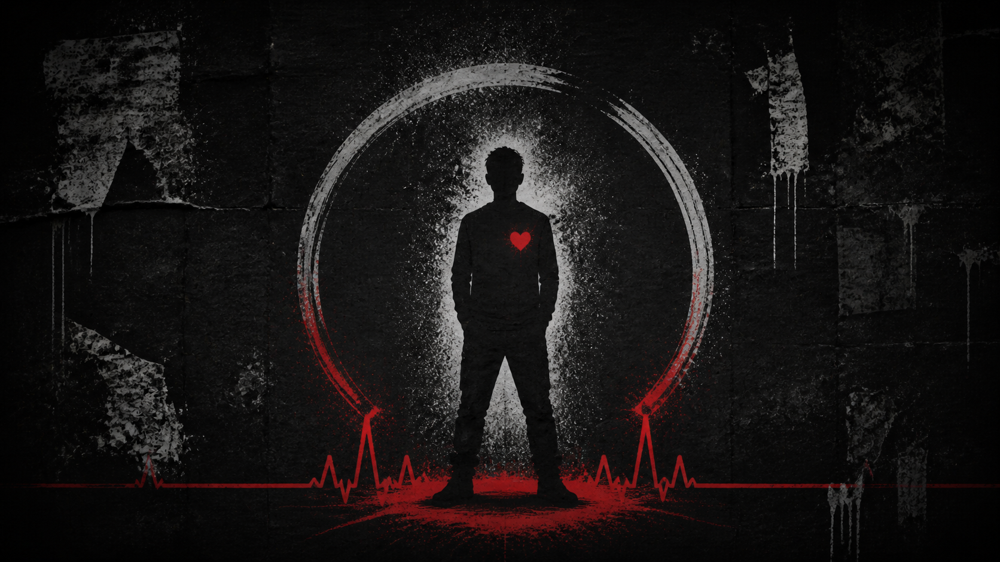

Version 02Belonging
The Outcast
Belong without becoming smaller.

Belong without becoming smaller.
The voice
I have stood outside enough doors to know this. Belonging is not permission. I bring my own fire, and I take my place.
The signal